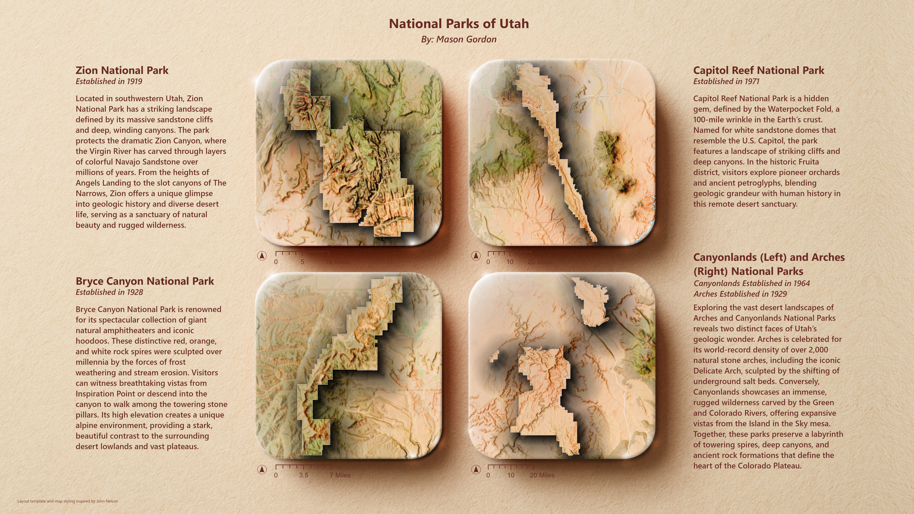

Mason Gordon
Master of Science in Spatial Data Science Portfolio
Welcome
Hello! I am a Spatial Data Scientist passionate about utilizing GIS, remote sensing, and machine learning to solve complex environmental challenges. Explore my defense projects in the sidebar, or take a look at some of my featured cartography below.
Featured Maps on the Hill


